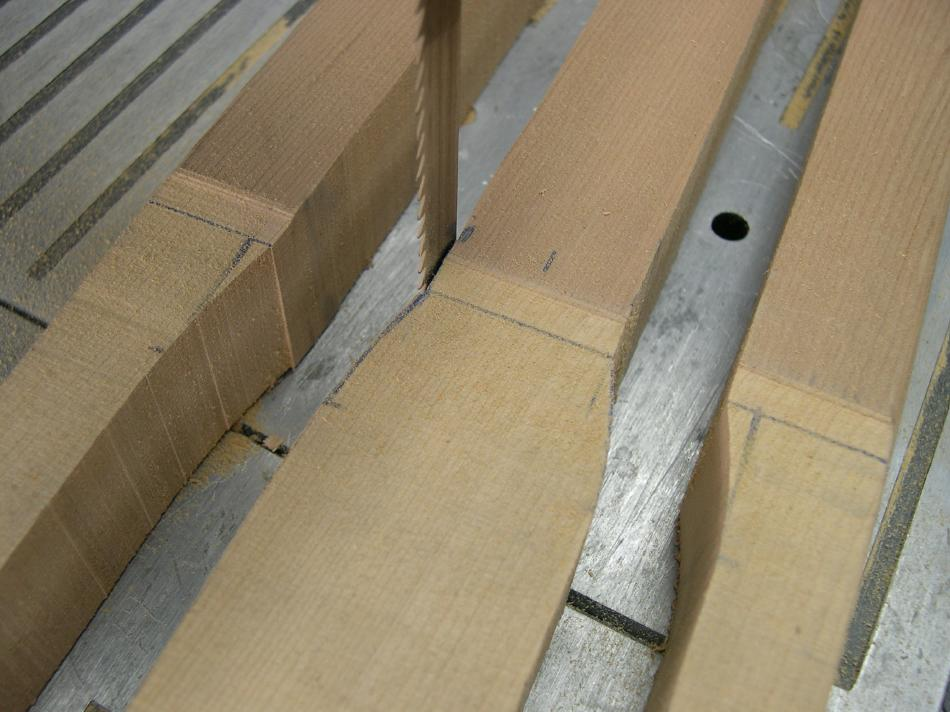

| Take-Apart Paddle Construction | Menu Previous Page Next Page |
|
 The paddle blank after being cut out with the bandsaw. The AP and GP have the same dimensions in the wrist area. Refer to the GP instructions or to the drawings for additional detail. |
|